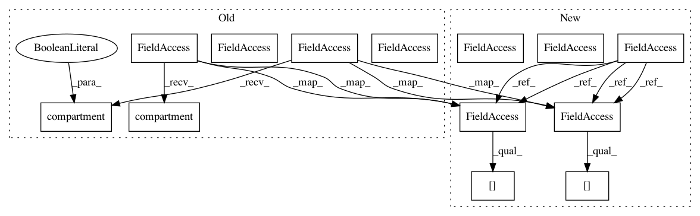

7900a9edc7a9b088b980c8d5cd78895d505269f4,examples/compartmental/bipolar_with_inputs.py,,,#,8
Before Change
pre = "g += w")
// !! Indices must be relative to the object in Synapses (neuron here)
S.connect(0, morpho.L.compartment(100*um))
S.connect(1, morpho.R.compartment(100*um))
// Monitors
mon_soma = StateMonitor(neuron, "v", record=[0])
mon_L = StateMonitor(neuron.L, "v", record=True)
mon_R = StateMonitor(neuron.R, "v",
record=morpho.R.compartment(100*um, local=True))
run(50*ms, report="text")
subplot(211)
plot(mon_L.t/ms, mon_soma[0].v/mV,"k")
plot(mon_L.t/ms, mon_L[morpho.L.compartment(100*um, local=True)].v/mV, "r")
plot(mon_L.t/ms, mon_R[morpho.R.compartment(100*um, local=True)].v/mV, "b")
ylabel("v (mV)")
subplot(212)
for i in [0, 5, 10, 15, 20, 25, 30, 35, 40, 45]:
After Change
// Morphology
morpho = Soma(30*um)
morpho.L = Cylinder(diameter=1*um, length=100*um, n=50)
morpho.R = Cylinder(diameter=1*um, length=100*um, n=50)
// Passive channels
gL = 1e-4*siemens/cm**2
EL = -70*mV
Es = 0*mV
eqs="""
Im = gL*(EL-v) : amp/meter**2
Is = gs*(Es-v) : amp (point current)
gs : siemens
"""
neuron = SpatialNeuron(morphology=morpho, model=eqs,
Cm=1*uF/cm**2, Ri=100*ohm*cm)
neuron.v = EL
// Regular inputs
stimulation = NeuronGroup(2, "dx/dt = 300*Hz : 1", threshold="x>1", reset="x=0")
stimulation.x = [0, 0.5] // Asynchronous
// Synapses
taus = 1*ms
w = 20*nS
S = Synapses(stimulation, neuron, model="""dg/dt = -g/taus : siemens
gs_post = g : siemens (summed)""",
pre = "g += w")
S.connect(0, morpho.L[-1])
S.connect(1, morpho.R[-1])
// Monitors
mon_soma = StateMonitor(neuron, "v", record=[0])
mon_L = StateMonitor(neuron.L, "v", record=True)
mon_R = StateMonitor(neuron.R, "v",
record=morpho.R[-1])
run(50*ms, report="text")
subplot(211)
plot(mon_L.t/ms, mon_soma[0].v/mV,"k")
plot(mon_L.t/ms, mon_L[morpho.L[-1]].v/mV, "r")
plot(mon_L.t/ms, mon_R[morpho.R[-1]].v/mV, "b")
ylabel("v (mV)")
subplot(212)
for i in [0, 5, 10, 15, 20, 25, 30, 35, 40, 45]:
In pattern: SUPERPATTERN
Frequency: 3
Non-data size: 13
Instances
Project Name: brian-team/brian2
Commit Name: 7900a9edc7a9b088b980c8d5cd78895d505269f4
Time: 2014-10-30
Author: marcel.stimberg@ens.fr
File Name: examples/compartmental/bipolar_with_inputs.py
Class Name:
Method Name:
Project Name: brian-team/brian2
Commit Name: 7900a9edc7a9b088b980c8d5cd78895d505269f4
Time: 2014-10-30
Author: marcel.stimberg@ens.fr
File Name: examples/compartmental/bipolar_with_inputs.py
Class Name:
Method Name:
Project Name: brian-team/brian2
Commit Name: 0bf0fd08f2973847ad038d68e2a04c03a3013c93
Time: 2014-08-04
Author: romain.brette@ens.fr
File Name: examples/compartmental/bipolar_with_inputs2.py
Class Name:
Method Name:
Project Name: brian-team/brian2
Commit Name: 7900a9edc7a9b088b980c8d5cd78895d505269f4
Time: 2014-10-30
Author: marcel.stimberg@ens.fr
File Name: examples/compartmental/bipolar_cell.py
Class Name:
Method Name: